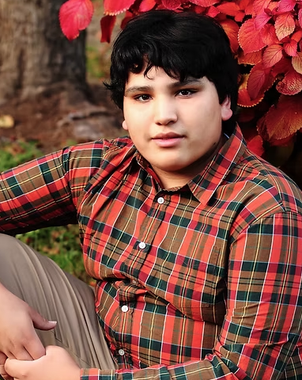
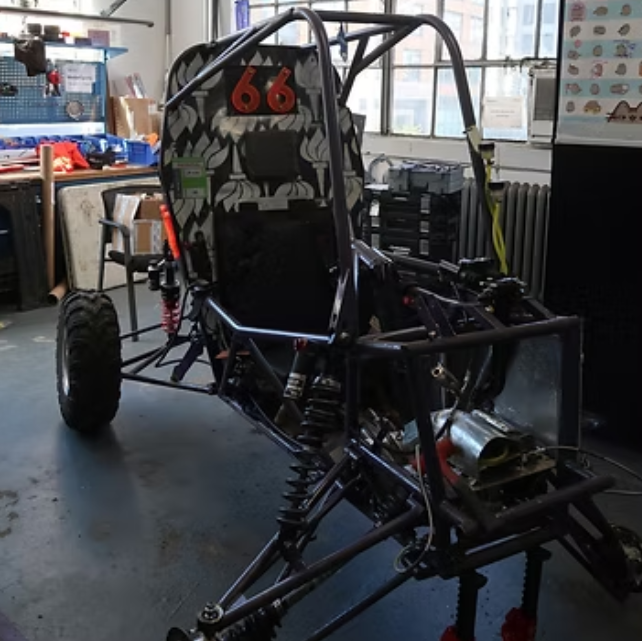
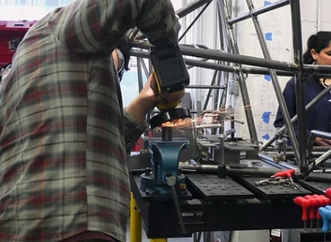
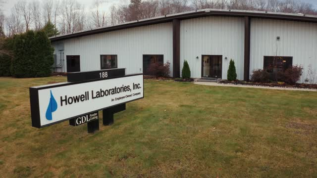
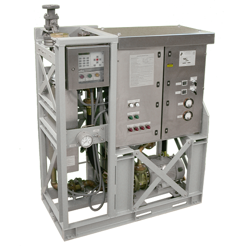
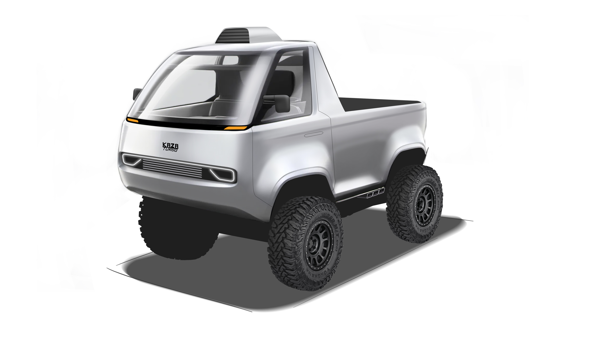

I am a Maine native and Class of 2023 graduate of Oxford Hills Comprehensive High School and Tech School. Currently, I am completing my B.S. in Mechanical Engineering at the NYU Tandon School of Engineering (Class of 2027), while concurrently pursuing NYU’s accelerated 4+1 Master's program in Robotics & Mechatronics.
Growing up in the low-income, rural foothills of Maine, opportunities for careers beyond the trades were limited. Throughout much of my childhood, I was drawn to building in all forms—whether through woodworking and carpentry or by dismantling old radios and clocks I found at our town dump. At a young age, my grandmother introduced me to engineering, a field that has long been a staple in her family. I learned about my great-great-grandfather’s contributions to the New York City skyline, from the Empire State Building to the Times Building, as well as the tools and designs he used. Throughout my early life, I relied heavily on intuition for the design and construction of my creations, but discovering engineering allowed me to apply math and science to my projects to refine that intuition.
Once I reached middle and high school, I expanded my knowledge with the help of teachers and clubs, where I explored the world of design and calculated manufacturing. During my second year of high school, I joined my school’s technical program and took my first formal engineering courses. While enrolled, I learned professional engineering practices and explored various sub-disciplines, allowing me to focus my interests through projects such as an aquaponics system and complex engineering calculations. I also applied my skills outside the classroom by designing parts for my car and my family’s business, which solidified my interest in the field. It was during this time that I chose mechanical engineering as my intended area of study, as it aligned with both my natural strengths and my interests in automotive and aerospace engineering.
After joining NYU’s Tandon School of Engineering, my skills continued to develop as I fully committed my education to mechanical engineering. This was also where I began my journey with NYU Motorsports and gained professional experience in automotive engineering. I initially worked on the drivetrain sub-team for the Baja SAE division, focusing on the design and manufacturing of mounts, shrouds, and couplers, primarily using static finite element analysis. I now serve as the Drivetrain Lead as well as the Design Lead for the Baja SAE team. In these roles, I oversee the complete design direction of the drivetrain for our Baja car and guide the team in a project management capacity to ensure we meet deadlines and pass inspections in accordance with SAE standards.
My personal interests range through many different facets, from art and science to simply being outdoors. I love exploring new places that are off the beaten path, whether I am finding "mom and pop" shops in different cities or hiking through the wilderness. Growing up with no internet and living many miles from the nearest town, the outdoors was my world to conquer. Today, I enjoy hiking, rock climbing, boating, and off-roading. While I have not had the chance to travel extensively yet, I jump at every opportunity to see new places.
I am fascinated by all things mechanical, especially trains, planes, boats, and cars. I have invested countless hours into my "Facebook Marketplace finds" and take specific pride in my C4 Corvette and Chevy square-body pickup. I have applied much of what I’ve learned in engineering to these vehicles, from frame improvements to driving performance. I also enjoy researching different areas of science, such as energy, physics, and even botany; I love learning new things regardless of their immediate utility, and this curiosity drives me to expand my skill set every day. Furthermore, I enjoy the arts through craftsmanship in woodworking and music. One of my favorite hobbies is drawing, which even allowed me to illustrate a children's book I wrote in high school titled Alphie the Amphicar. Above all, I love spending time with my friends and sharing my interests and adventures with them at every chance I get.
I have gained many skills in both professional and educational settings that have provided me with the opportunities I have today, and there are many more I wish to acquire. I am currently working on gaining proficiency in welding, CAM, and KISSsoft design software. These skills will further contribute to my experience as an engineer and provide me with technical knowledge that I can apply to my personal endeavors as well.
NYU Motorsports is a Vertically Integrated Project (VIP) at NYU where students design, build, and race competitive vehicles for Baja SAE and FSAE Electric competitions. Over my time with the team, I have advanced from a freshman design engineer on the drivetrain subteam to becoming both the Drivetrain Lead and the Head Design Director for the entire Baja division. Reaching these positions demanded dedicated commitment and technical growth, allowing me to both design a high-performance off-road racer and lead an engineering team productively.
In my early years on the drivetrain subteam under leads Jamie Tian and Mubeen Zainul, I focused on designing rotary shrouds and structural mounts under strict Baja material and safety regulations. This served as my primary introduction to FEA simulation in SolidWorks and Ansys. During this time, I developed critical components—including a guard CVT case and a custom engine mount to minimize engine vibration—while assisting other subteams with frame modifications, suspension, and steering mounting fixtures.
Under the mentorship of Mubeen Zainul, I learned advanced mechanical design procedures for custom gearboxes, manual lathe operation, and welding. Upon Mubeen’s graduation, I was appointed Drivetrain Lead. In this role, I delegate design tasks, mentor junior members, and oversee powertrain development. Under my leadership, we are overhauling the gearbox and implementing an electronic CVT (eCVT)—marking the team’s first fully custom gearbox design. This initiative required acquiring new toolsets, such as using KISSsoft for gear design and operating an engine dyno for power output testing.
Following Mubeen’s graduation, I was also elected co-Design Director alongside Kamil Gozalov. Operating on a two-year alternating build cycle with FSAE Electric, I act as project manager for the entire 2027–2028 Baja vehicle lifecycle. This position requires cross-subteam technical oversight—from brakes to suspension—to guide leads, manage design review timelines, and collaborate with business and manufacturing teams. For the '27–'28 car, we are reworking the chassis to optimize packaging for our new drivetrain and address legacy chassis constraints.
Working at NYU Motorsports has allowed me to directly apply classroom automotive engineering theory to physical vehicles. My ultimate goal before graduating is to lead NYU Motorsports to a top-20 finish at a Baja SAE competition—achieving the team’s highest placement to date.




During my full-time summer internship at Howell Laboratories—a defense contractor providing water treatment and environmental systems for the U.S. Navy and municipal facilities—I gained extensive experience in an entirely in-house manufacturing environment. Working alongside senior engineers, I contributed directly to live production redesigns and cleared critical engineering backlogs.
My primary project was supporting the redesign of the 7600 Seawater Chlorinator to replace obsolete legacy components. I created over 50 detailed manufacturing drawings complete with technical specifications, callouts, and assembly notes while incorporating feedback from the shop floor. I logged these completed assets into the Epicor ERP system for workflow management. Together with my fellow intern, our drafting contributions saved the company an estimated month of project schedule, demonstrating a demand that led Howell Labs to establish a permanent full-time drafting position.
I also addressed a major backlog of Engineering Change Requests (ECRs). This work ranged from executing drawing updates to conducting physical warehouse audits to assign smart part numbers to new inventory. Resolving these ECRs prevented critical component confusion on future Navy production runs. Working directly with machine operators and assemblers gave me first-hand insight into manufacturing constraints and digital product data management through Autodesk Vault.
Additionally, I led the complete 3D modeling of the legacy 4870 Air Control Panel in Autodesk Inventor. Working from decades-old scanned hand drawings and capturing undocumented assembly practices used by shop technicians, I built a fully constrained CAD model and generated modern assembly drawings. This comprehensive modeling project sharpened my Inventor capabilities and exposed me to specialized techniques like brazing and powder coating, equipping the sales and engineering teams with digital assets for customer proposals and vibration/shock testing.
Working at Howell Labs early in my degree provided invaluable insight into defense contracting, floor operations, and cross-departmental communication between design, production, and clients. Mentorship from my supervisor, Joel Parent, on military-grade shock and vibration testing standards directly informs how I approach design validation and engineering management at NYU Motorsports.
During the Spring 2026 semester, I served as the Teaching Assistant for ME-UY 3253 Automotive Engineering under Professor Sven Haverkamp. The course covers complete vehicle conceptual design—ranging from occupant packaging and prime movers to longitudinal, vertical, and lateral driving dynamics. Logging roughly 10 hours per week, I mentored undergraduate engineering teams through complex analysis and design deliverables.
I hosted weekly office hours to assist student project groups with their iterative design submissions. I regularly walked teams through complex analytical calculations, including tractive force analysis, powertrain sizing, gear ratio selections, and tire behavior models. A key focus of my guidance was evaluating the fundamental engineering assumptions made by each team—ensuring their parameters for vehicle packaging, mass distribution, and component selection were both physically realistic and mathematically sound.
In addition to holding office hours, I assessed weekly group deliverables for calculation accuracy, professional presentation formatting, and unit consistency. During scheduled progress presentations, I evaluated group dynamics and posed targeted questions regarding design decisions, packaging trade-offs, and dynamic calculations to challenge the students' depth of understanding.
At the conclusion of the semester, I assisted in grading comprehensive final design reports—extensive document submissions exceeding 50 pages that compiled the entire semester’s vehicle development. Reviewing these reports required verifying complete dynamic models, package plans, and written engineering justifications to ensure they met rigorous academic and industry standards.
